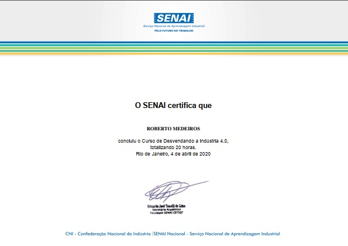
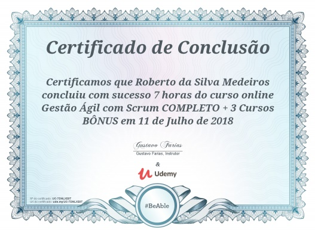
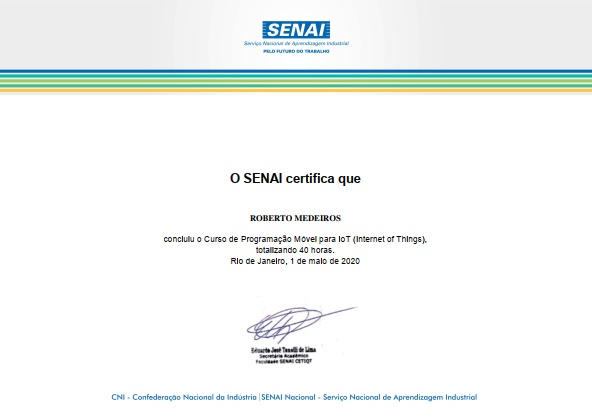
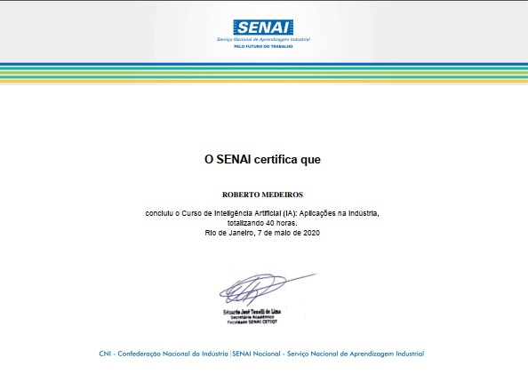
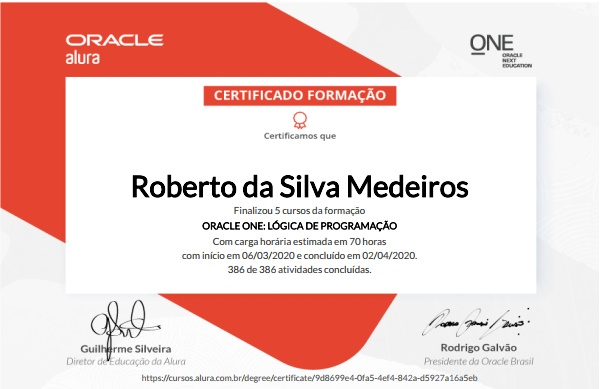

-
Quem Sou Eu
Graduado em Sistemas de Informação pela Universidade de Pernambuco(UPE) Roberto Medeiros é um brasileiro nato e profissional apaixonado por tecnologias, que busca de forma contínua está atualizado sobre temas relevantes nacionais e internacionais - tecnologias, empreendedorismo, política, cultura e economia. Mas também possui um hobby com interesses nas áreas esportivas - futebol.
Neste ano muitos certificados de qualicação vêm sendo conquistados para o futuro mercado de trabalho - Certificado profissional de suporte em TI pelo Programa Cresça com o Google; Lógica de Programação, Front-End e Empreendedorismo pela Alura / Oracle; Desvendando a Indústria 4.0; Conectando a indústria 4.0; SoftsKills – Competências do profissional da indústria 4.0; Programação Móvel para IoT(Internet of Things); Inteligência Artificial (IA) aplicações na indústria; Desvendando a Tecnologia Blockchain; Devendando o Lean Manufacturing; Ferramentas aplicadas no Lean Manufacturing; Nos anos de 2018 a 2019 cursou inglês intermediário pelo Progama de Línguas e Informática (PROLINFO) associado à Universidade de Pernambuco bem como realizou muitos cursos complementares que estão compreendidos em Orientação a Objetos com Java (2019); Introdução ao Teste de Software pela USP (2018); Teste de Software; Testes unitários em Java com JUnit; Testes funcionais com Selenium; Gestão Ágil com Scrum; Planejamento e Gestão de Projetos ofertados pela Udemy Online (2018). Nos últimos dois anos atuei como analista de suporte em empresas pública(TRE-PE) e privada(GSM Informática; Renault-Regence). Entre minhas competências técnicas - Pacote office, sistema operacionais, internet, suporte, programação frontend, testes manuais, atendimento ao cliente, emissão e acompanhamento de relatórios organizacionais - e habilidades - Boa comunicação, boa escrita, empatia, motivado,proativo, ética profissional, aberto a novas experiências culturais e intelectuais, em organização de atividade.
E por fim não que seja menos importante gosto de atuar em trabalhos voluntários pois acredito que seja fator chave para a geração de valor individual e coletivo.
-

Alura/Oracle
Front-End
-

Google/Coursera
Suporte em TI
-

Senac
Industria 4.0
-

Udemy
Gestão Ágil com Scrum
-

USP/Coursera
Teste de Software
-
Alura/Oracle
Empreendedorismo
-

Senac
IoT
-

Udemy
Teste Software
-

ITA/Coursera
Java
-

Udemy
Testes com Selenium
-

Senac
IA
-

Alura/Oracle
logica